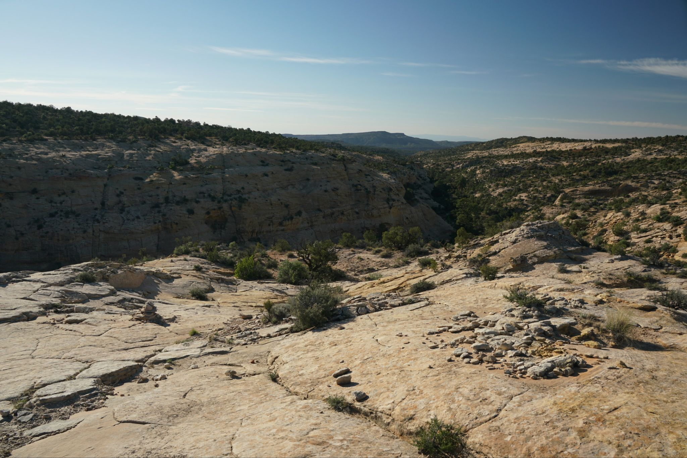
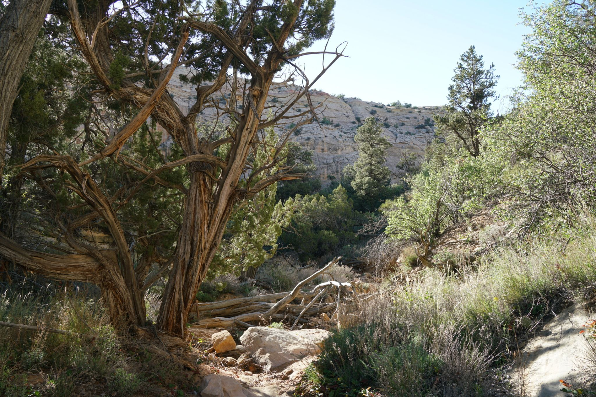
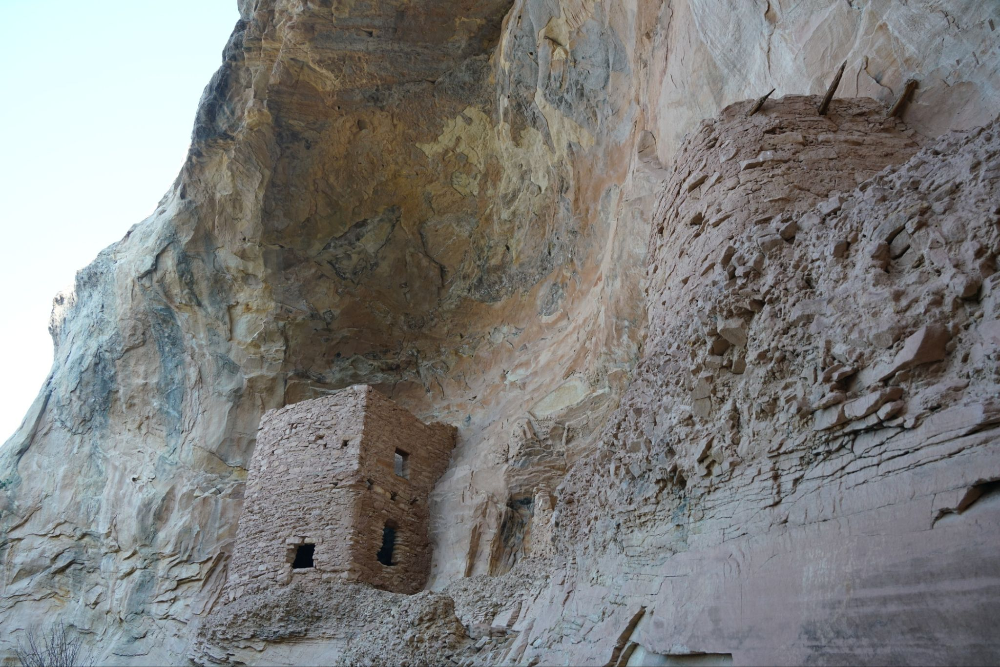
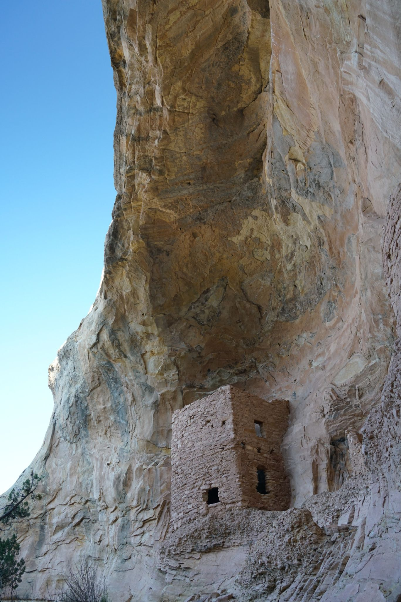

4/7/2026 - Tower House Ruins
The road in was unpaved but decent though the part to the actual trailhead was a bit too intense for anything other than a high clearance vehicle. It was no matter since it only added a couple minutes walking. The hike went straight down to the canyon bottom then through a short section of juniper and pine vegetation before coming to a small pool of water, above which the Tower House stood. The Tower is maybe two stories and like a box, not too different actually than a small one room house. There were some faded petroglyphs of animals and hands and in the mud by the water pool quite a few wildlife paw prints.



